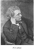
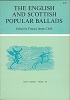
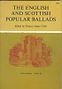
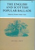
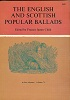

    
The collection below is a "work in progress". I'm sure all texts could use a good proof-reading, but other than that, the lyrics, narratives, additions and corrections are mostly complete already. The ballad airs from Volume 5 have been added (♪ for the low-resulution version, ♬ for a higher-resolution one).
There is more work to be done yet... For any questions, comments, additions or corrections, contact Ed de Moel. To contact Ed about any of the other pages on this web-site, just click on the picture in the left upper corner.
Ed has started on applying Professor Child's “Additions and Corrections”. Here and there sequences like ... will appear. Hover the mouse over those images, and the nature of the addition or correction be displayed. Click on either of those images, or on the text in between, and the addition or correction will be displayed. Click on the newly displayed text, and the display will revert to the original text.
Please note: if you know what Unicode is, you probably don't need this paragraph at all, but... If you don't, you may need to find someone who does and make sure that your browser and computer are set up to handle Unicode properly. Professor Child includes a lot of quotations in their original languages (french, italian, slavic, greek, etc.), which means that here and there there are some special characters like “thorn” (þ), “eth” (ð), symbols with “haceks” (Č, š, ž), etc.), or other special characters like ą or Ł). Interestingly enough, I haven't seen any text in Cyrillic in Professor Child's texts (yet). At any rate, if all the special characters above show up as they are supposed to, you're fine. If they don't, you'll need to install support for “Unicode”.
Click here to see what's left to be done.
When all is “done”, all lyrics, narratives, end-notes, corrections and additions from Child's collection will be included in this web-site.
In 1904, a “condensed” version of the Child Ballads was published by Helen Child Sargent and George Lyman Kittredge. The brief descriptions of the ballads that Mr. Kitttredge created for this edition are also included in this web-site. Please note that Mr. Kittredge did not include ballads 281, 290 and 299 in his “condensed” edition, and that he did not write brief introductions for ballads 131, 256, 279, 297, 298 and 303. For some ballads, Mr. Kittredge added more versions. Those versions are included too, and marked with asterisks.